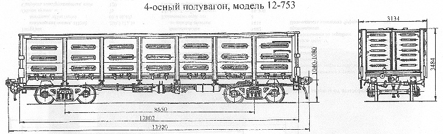

Назначение: для перевозки сыпучих, крупнокусковых, штучных и других грузов, не требующих защиты от атмосферных осадков
Параметры
| Номер проекта | 753.00.000-00 |
| Технические условия | ТУ 24.05.812-83 |
| Модель вагона | 12-753 |
| Тип вагона | 600 |
| Изготовитель | КрВЗ |
| Грузоподъемность, т | 69 |
| Масса тары вагона, т | 22,5 |
| Нагрузка: статическая осевая, кН(тс) |
228(23,25) |
| погонная, кН/м(тс/м) | 64,45(6,57) |
| Объем кузова, м³ | 74 |
| Скорость конструкционная, км/ч | 120 |
| Габарит | 0-ВМ(01-Т) |
| База вагона, мм | 8650 |
| Длина, мм: по осям сцепления автосцепок |
13920 |
| по концевым балкам рамы | 12802 |
| Ширина максимальная, мм | 3134 |
| Высота от уровня верха головок рельсов, мм: максимальная |
3484 |
| до нижней обвязки | 1416 |
| Количество осей, шт. | 4 |
| Модель 2-осной тележки | 18-100 |
| Наличие переходной площадки | нет |
| Наличие стояночного тормоза | есть |
| Внутренние размеры кузова, мм: ширина |
2878 |
| длина | 12324 |
| высота | 2060 |
| Ширина дверного проема при открытых дверях, мм | 2530 |
| Количество, шт.: торцевых дверей |
2 |
| разгрузочных люков | 14 |
| Размер разгрузочных люков, мм | 1327х1540 |
| Угол открывания крышек люков, град.: средних |
31 |
| надтележечных | 23,5 |
| Площадь пола, м² | 36,15 |
| Год постановки на серийное производство | 1983 |
| Возможность установки буфера | есть |